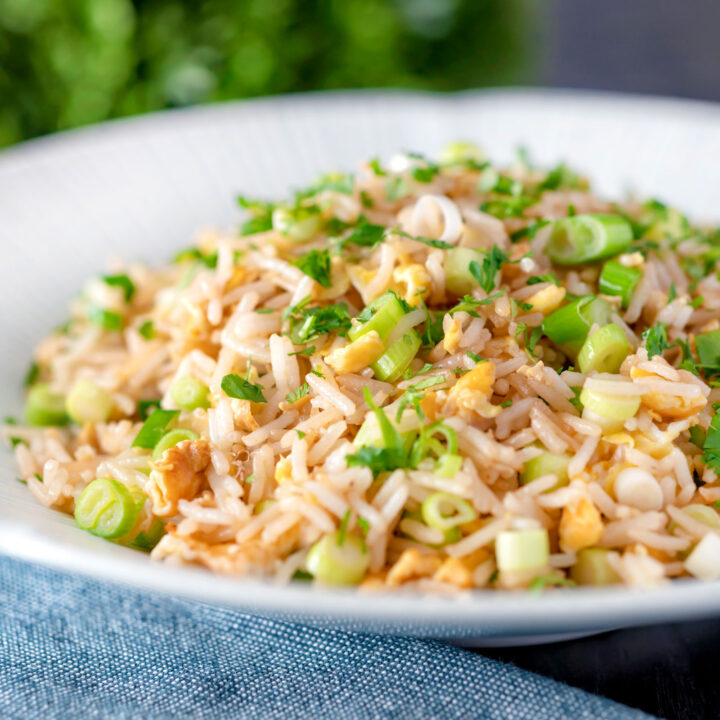

Egg Fried Rice

Fried rice is a dish of cooked rice that has been stir-fried in a wok or a frying pan and is usually mixed with other ingredients such as eggs, vegetables, seafood, or meat.
Ingredients:
- 1 cup water
- ½ teaspoon salt
- 2 tablespoons soy sauce
- 1 cup uncooked instant rice
- 1 teaspoon vegetable oil
- ½ onion, finely chopped
- ½ cup green beans
- 1 egg, lightly beaten
- ¼ teaspoon ground black pepper
Steps:
- In a saucepan bring water, salt and soy sauce to a boil. Add rice and stir. Remove from heat, cover and let stand 5 minutes.
- Heat oil in a medium skillet or wok over medium heat. Saute onions and green beans for 2 to 3 minutes. Pour in egg and fry for 2 minutes, scrambling egg while it cooks.
- Stir in the cooked rice, mix well and sprinkle with pepper.